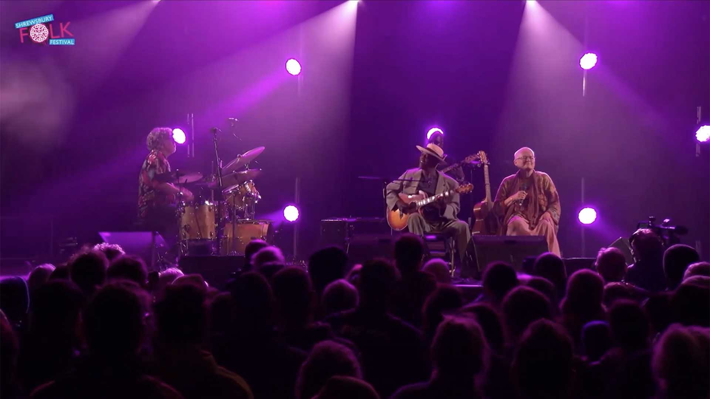
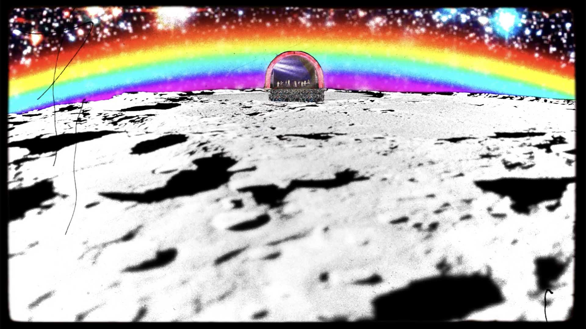
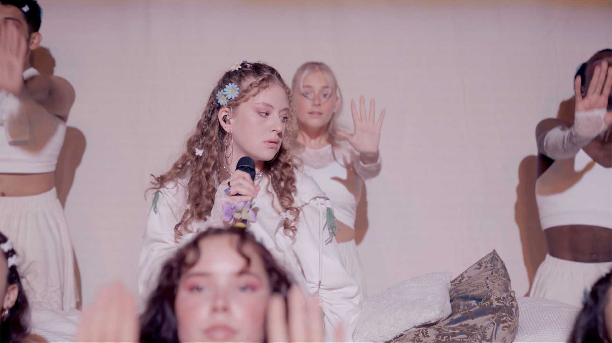
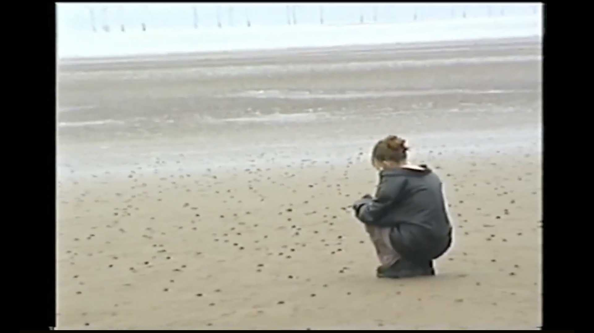
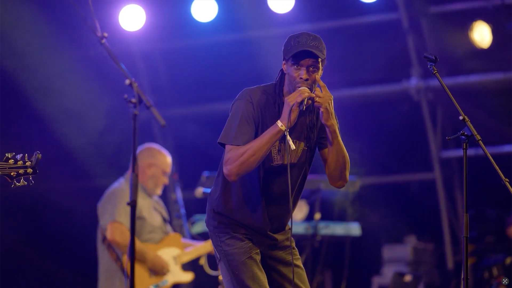

Music Video

Shrewsbury Folk Festival
Volunteering annually, since 2016. Vision mixing, camera operating and broadcast engineering.
Selected stream highlights:
2024 - Eric Bibb
2024 - El Pony Pisador
2024 - Suntou Susso Band
2022 - Judy Collins
2018 - Fisherman's Friends


Alba Arias 'Total Stranger: Live'
Directors
Alba Arias
Maia Wainer
Links
Better Than Me
Lifetime To Go Back
Total Stranger
X La Noche


Shrewsbury Folk Festival, 2022
Director
Aaron Child
Links
Full Trailer
Mini Trailer
Family Fun
Dance
Music
Food & Drink